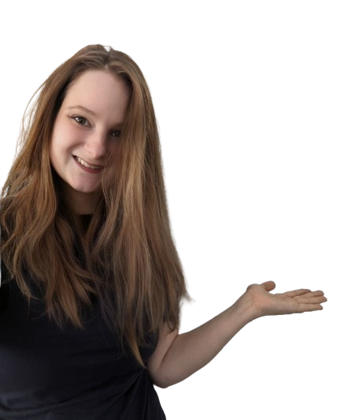

Lebenslauf
von Clarissa Harms

Personendaten
Geboren am 07.12.1996 in Lübeck
Familienstand: verheiratet
Nationalität: deutsch
Kontakt
Lindenstr. 13, 21646 Bunde
Mobil:017645822733
Bildungsweg
- 03/2022 - vsl. 12/2024
Fernstudium UX Design (B.A.),
Internationale Hochschule, Erfurt
- 09/2020 - 03/2022
Studium Informationstechnologie und Design (B.S.),
Technische Hochschule Lübeck, Lübeck
- 08/2017 - 01/2020
Ausbildung zur Medienkauffrau für Digital und Print
Zeitverlag Gerd Bucerius & Co. KG, Hamburg
- 08/2014 - 07/2017
Abschluss Abitur
Friedrich List-Schule (Berufliches Gymnasium)
Berufserfahrung
- seit 02/2022
Werkstudentin UI Design, Securitas Holding GmbH
- 08/2021 - 01/2022
Werkstudentin im Content Management, Luksit GmbH & Co. KG
- 01/2020 - 06/2020
Produktmanagerin, Zeitverlag Gerd Bucerius & Co. KG, Hamburg
Weitere Qualifikationen und Interessen
- Fremdsprachen: Englisch
- EDV: Framer, Figma, HTML, Adobe Cloud, MS Office
- Hobbies: Zeichnen, Lesen